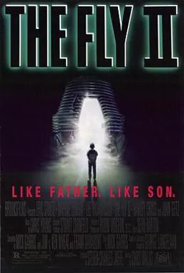

The genetics
The film turns the first film's teleportation accident into a story about inheritance. Martin carries the fly genes his father acquired in the Telepod, and his accelerated growth and eventual metamorphosis are presented as a hereditary condition waiting to "awaken". The cure he devises is a crude form of gene therapy: the Telepods exchange his mutated genes for healthy human ones taken from another person, who then suffers the disfigurement. The scientist figure is a corporate one: Bartok raises Martin as an experimental subject, spies on him and wants to use his body and the machines' capacity for genetic manipulation for profit. Laboratory animal experimentation, shown through a deformed dog kept alive for study, is another theme. Scientifically, acquired changes in an adult's body are not passed to children in this way, and genes cannot be swapped between whole organisms like parts, but the film uses these ideas as body horror.
How genetics is portrayed
- Overall portrayal of genetics
- mixed The film pits the central hero Martin, whose genetic know-how cures him, against Bartok's corporation, which raises him as a specimen and wants his genes for profit; science serves both cure and destruction, and the ending punishes the corporate villain rather than the science.
- Outcome of the genetic intervention
- mixed The inherited fly genes turn Martin into a monster and Bartok's experiments deform a dog and lead to killings, but Martin's gene swap cures him, at the cost of turning Bartok into a creature.
- Anton Bartok (Bartok Industries)
- villain Aim: commercial, curiosity (negative). Bartok raises Martin as a lab subject, films him in secret, feeds him placebos and waits for his mutation so he can exploit his body and the Telepods' gene-manipulating power for profit; the film makes him the villain and ends with him turned into a deformed specimen in the dog's old pen.
- Bartok Industries scientists
- villain Aim: commercial, curiosity (negative). They botch the teleportation of a dog, keep the deformed animal alive for study and treat Martin coldly as a specimen; the film stages them as cruel, and the transformed Martin kills them.
- Martin Brundle
- hero Aim: personal, benevolent (positive). Martin repairs the Telepods and devises a gene swap to cure his inherited fly genes, shelving it at first because the donor would be disfigured; the compassionate hero finally uses it on Bartok, which the film stages as poetic justice.
The story
Months after scientist Seth Brundle became a human-fly hybrid, Veronica Quaife dies giving birth to a larval sac from which a seemingly normal boy emerges. Anton Bartok, owner of the company that financed Brundle's teleportation experiments, adopts the child, Martin, and raises him in a laboratory. Martin ages very fast, has a genius intellect and needs no sleep. At five, with the body of a 25-year-old, he is asked to repair his father's Telepods, which have failed to teleport living creatures. He succeeds, falls in love with an employee, Beth Logan, and begins to show signs of becoming a hybrid himself. He discovers that Bartok knew his fate and plans to exploit his body and the Telepods' power of genetic manipulation for profit. Fully transformed, Martin forces Bartok into a Telepod and uses it to swap his insect genes for Bartok's healthy human genes, regaining human form while Bartok becomes a deformed creature.